游戏落幕，屏幕熄灭。
此刻回头审视这场步步推进的虚拟签约，你或许会真切感受到一种猝不及防的失重与慌乱：明明只是抱着课余兼职、尝试自媒体的简单初衷，全程顺从沟通、信任对方承诺、配合流程签约，从未主动违约、从未恶意跑路，最终却莫名被扣上"违约"的帽子，骤然背负起数十万元的天价赔偿债务。
一头雾水的错愕、无力辩驳的委屈、年少负债的恐慌、无路可退的焦虑……这并非虚拟设定，也不是个例，而是来自近年来无数大学生、青年内容创作者签约MCN机构的真实经历。
我们从MCN机构评估最具未来发展潜力的社交媒体平台小红书中携带#MCN解约纠纷#标签的帖文中抽取了2637条非重复帖文。
经过模型的分析与评估，我们发现小红书平台对于MCN解约纠纷的话题讨论聚焦在3个主题：
"合同与违约金纠纷"是争议焦点。在短视频兼职常态化的当下，大量涉世未深的青年群体，频繁被MCN机构"零门槛、保底高薪、免费孵化、一对一扶持"的温柔话术精准吸引。从被主动搭讪、被刻意肯定，到对自媒体副业抱有期待，再到顺利签约、满心憧憬开启新尝试，沉浸在"低成本增收、被专业培养"的美好想象中。
可流程走完后，所有口头承诺尽数落空——所谓的专业孵化沦为无人问津的放养，所谓的流量扶持全然不见踪影，取而代之的是强制推送的三无广告、无底线的内容要求、严苛到脱离学生身份的工作指标。学业压力与签约任务双向挤压，精神内耗与数据焦虑持续叠加，当不堪重负的年轻人想要抽身解约、回归正常生活时，却猛然发现早已落入精心设计的陷阱。
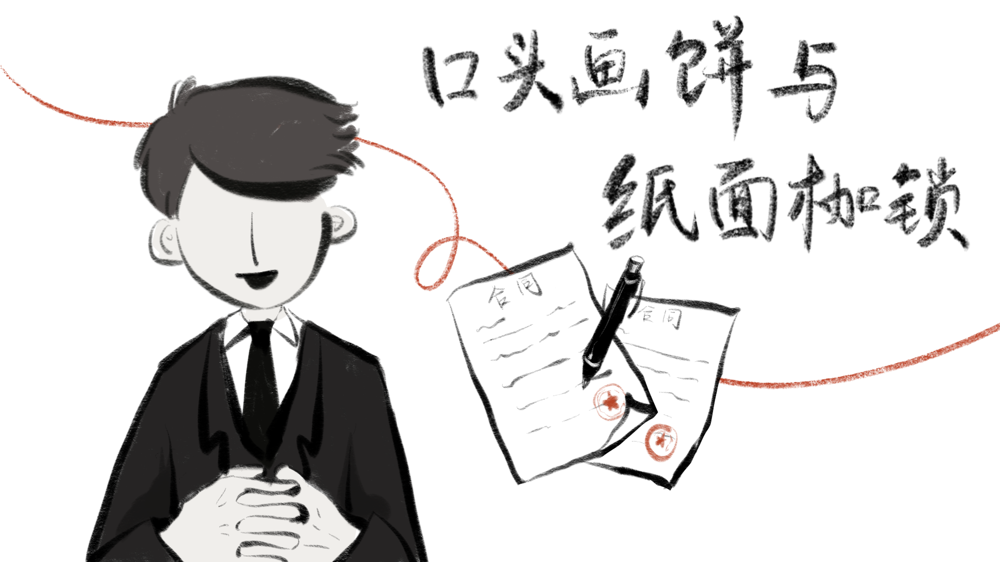
北京盈科律师事务所朱晨飞律师指出，MCN机构常借合同文本玩"文字游戏"，利用高额签约费和低门槛吸引签约，再通过无法完成的考核制造违约，从中获利。在北京致诚律师事务所655起合同违约案件中，主播因违约被MCN公司起诉的案件占比高达99.5%。
口头承诺与书面合同背离
在签约过程中先以诱人的口头承诺促成签约，再以书面合同条款锁定对方义务。这种策略贯穿于签约前、签约时及签约后三个阶段性环节。
签约前是充满诱惑的口头承诺。"您好，我们是一家MCN公司，做素人精品IP孵化……无直播、不收费，公司一对一服务从零打造全包。"大学生郑妍在短视频平台收到这样一条私信。面对"拍不好、不会直播"的担心，对方承诺"不用直播，我们是专门打造素人的""如果效果不好只需要把公司提供的账号归还即可"。
签约时，郑妍却发现，书面条款的内容与缔约前双方沟通过程中的意思存在根本差异——合同明确规定主播每月直播不少于24日、每日不少于3小时。公司方以"合同只是一个模板，没有实质性作用"为由予以回应。而郑妍，在不充分了解条款法律效力的情况下完成了签署。
此外，据多名当事人反映，机构承诺的"保底薪资"于签约时或未载入书面合同，或虽载入但于合同履行阶段被公司以直播时长不足、配合度不符合要求、未完成关键绩效指标等事由克扣或拒绝支付。
然而签约后，MCN却依据有利己方的书面条款主张权利。同时，在诉讼程序中，MCN公司可依据书面合同条款主张其权利，而事前的口头承诺，往往缺乏证据，无法举证。大学生群体普遍缺乏证据保全意识，口头沟通记录没有以书面证据形式保全。
依据《中华人民共和国民法典》第四百六十九条及《最高人民法院关于民事诉讼证据的若干规定》的相关规定，口头意思表示虽不排除其法律效力，但在诉讼中，主张该意思表示存在的一方须承担举证责任，并以证据能够达到高度盖然性之证明标准为必要。
权利与义务严重失衡
MCN合同最直观的问题，是合同条款本身的权利义务不对等。
2026年初，大学生小蝶与某MCN公司签订合同，履行期间，公司对小蝶实施严格管控，每日强制直播7小时，请假扣薪，直播脚本由公司统一制定，这完全具备劳动关系典型的从属性特征——包括人格从属性、经济从属性与组织从属性，已构成实质劳动关系，然而小蝶所签署的名为《演绎经纪合同》，这意味着公司规避劳动关系本应履行的雇主义务。当小蝶因身体不适离职，公司依据合同索赔五万元——一方有天价违约金，而另外一方没有限制，这属于典型的"霸王条款"。
同时，主播在合同履行中的实体权利往往缺失。郑妍签署的合同仅模糊约定"符合甲方直播内容要求的直播时长，方可确认为有效直播时长"，但直播内容的要求缺乏具体细则，直播内容合格的评判权掌握在公司手中。这种合同使对方当事人的合同义务处于不确定状态，实质性地排除了主播在合同履行中的主要权利。
劳动关系认定的规避
合同怎么定性，决定了纠纷走哪条法律程序。如果被认定为劳动关系，则适用劳动法的保护；如果被认定为合作关系，则适用民法典，MCN可以依据合同条款索要违约金。后者对内容创作者们天然不利。因此，大部分合同载明"双方仅为合作关系，不涉及劳动关系、雇佣关系"的条款。把本可能构成劳动关系的用工形式包装成民事合作，以此绕开劳动法的约束。
据北京市致诚律师事务所数字法治研究与服务中心研究，在254件涉及网络主播与MCN公司法律关系认定的案件中，合同纠纷案件共138件，人民法院采纳主播关于双方存在事实劳动关系抗辩意见的仅11件，占比8%；劳动争议案件共116件，人民法院判决认定双方存在劳动关系的共57件，占比近50%。在裁判趋势方面，自2019年至2024年，劳动争议案件中法院确认劳动关系的比例稳定在45%至60%之间，无明显趋势变化。大量主播在司法程序中被划归为"合作关系"，MCN机构无须依照《中华人民共和国劳动合同法》的规定为主播缴纳社会保险，亦不受最低工资标准、工作时间上限、加班费支付等劳动规范的约束。近半数的主播无法获得劳动者身份的保护，这进一步固化了主播群体的弱势地位。
过去十年MCN行业经历了高速发展，机构总量从2015年的160家增至2025年的近3万家，增长超过180倍，市场规模达636亿元。
但与扩张的市场规模相反的是，2025年，百人以上MCN机构占比缩小了9%，200人以上大型机构仅占12%，而小微团队数量却增长14%。新注册的机构，超4成都将团队规模控制在30人以内。
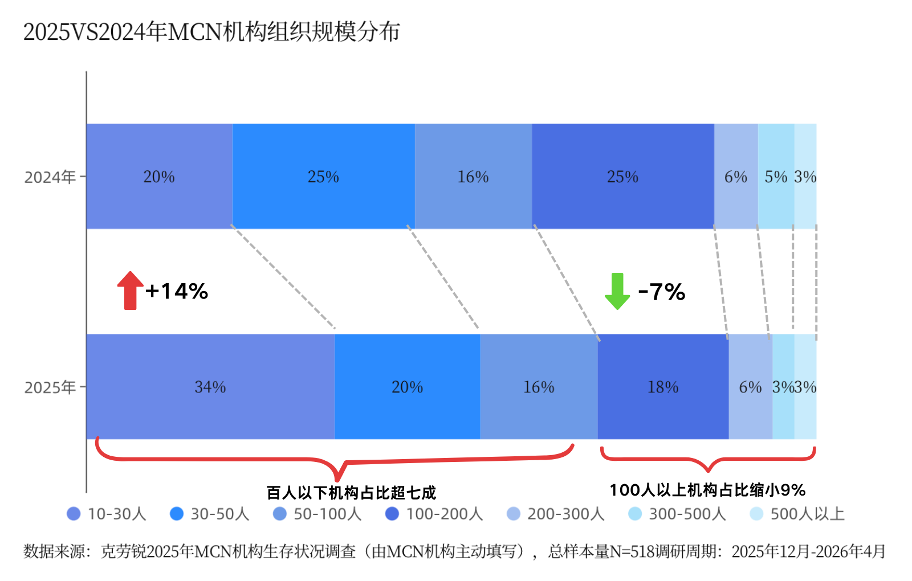
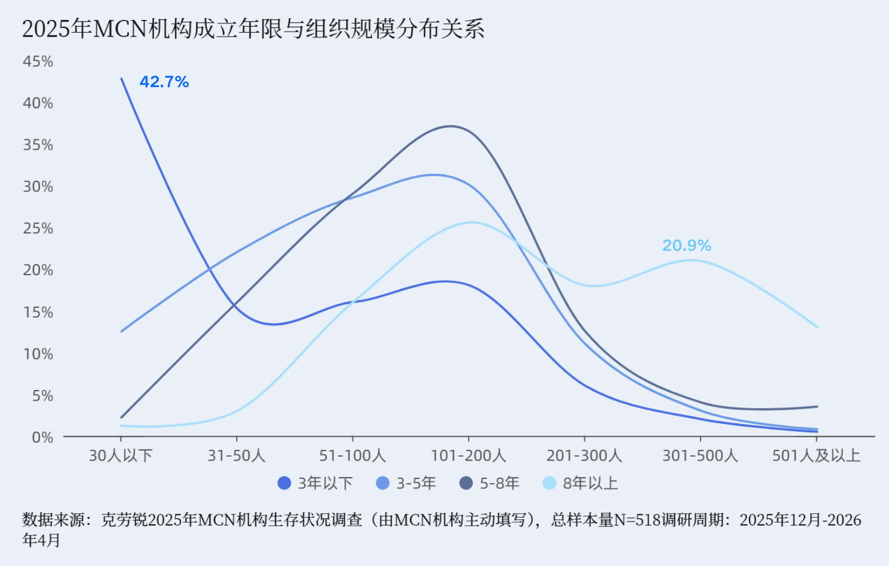
与运营团队不断收缩对应的，是持续扩张的账号规模。2025年，95%的MCN机构选择扩大孵化账号规模，同比增长15%，92%选择扩大签约账号规模，同比增长4%。运营账号规模500人以上机构占比显著提升。
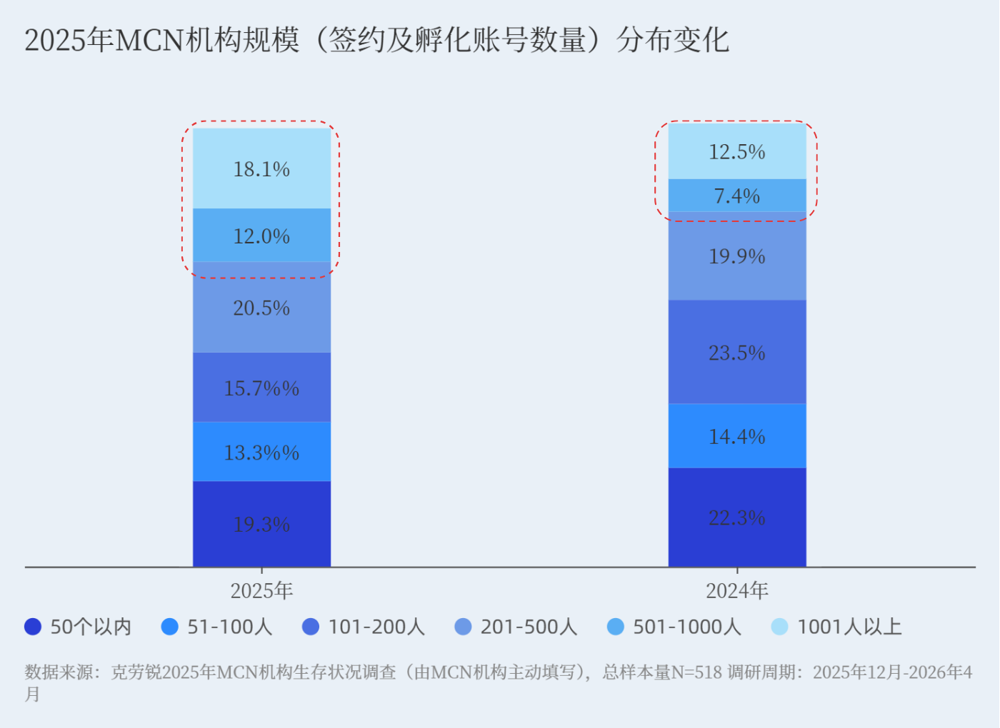
专业的MCN机构本应极大地助益内容创作者们，无论是账号运营，内容制作，拍摄指导，资源资金支持、商单变现支持等各个维度。这正是MCN机构存在的意义。然而，小微型MCN公司，流量资源稀缺、内容运营能力匮乏、商业变现渠道狭窄，无专业运营团队、无流量投放预算、无成熟孵化体系，何以兑现签约前"一对一孵化、专业培训、流量扶持"的宣传承诺？
相似的遭遇在社交媒体上随处可见：大量小微MCN签约学生网红后，不提供脚本指导、不进行流量投放、不配备运营对接、不兑现设备补贴与保底薪资，放任博主自主摸索创作，此前承诺的全部为空口话术。
广撒网，全放养，如若内容创作者走红，与机构签订合约所获的分红则属于机构纯收益，若未走红，提出解约则进入索赔收割流程，稳赚不赔。
"只需拿到营业执照就能开MCN机构，经营成本和违规成本都很低，如果一个机构开办不下去，再重新注册一家就可以了。通过企业信息查询平台很难查出来这类机构的风险信息。"湖南商管律师事务所律师李炎在接受央视新闻采访时指出。
在2020—2024年间，新注册的MCN机构中，仅约31.8%能够连续稳定经营超过3年，超过68%的机构在3年内注销、吊销或停业。
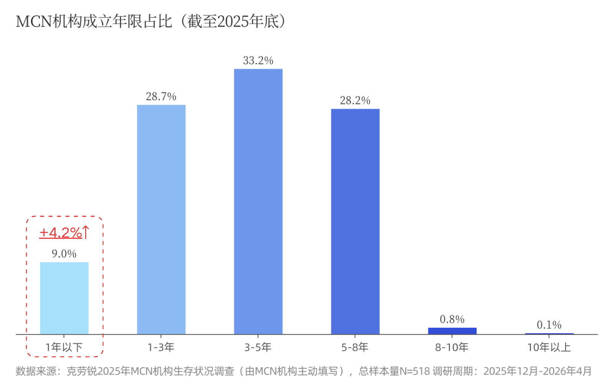
在司法实践中，制造合同陷阱，索取高额违约金是普遍现象。罗莉签约后因直播时长要求陷入困境，斗鱼方面先以律师函索赔8000万元，后于仲裁申请中主张600万元。而罗莉实际直播收益远少于索赔金额。合同约定的违约金数额与实际收益之间的严重失衡，MCN机构主张的违约金时常为主播实际收益的数倍乃至数百倍。黑龙江省哈尔滨市中级人民法院审理的一起诉讼中，MCN公司上诉主张违约金149452元及律师费20000元，其名目五花八门，包括预期收益损失、运营人员工资成本、场地租赁费及甚至装修费分摊等。而当事人小王签约四个月，仅收益6025.70元。在网红与MCN公司合同纠纷中，以网络主播为主的违约方认为守约方主张的违约金过高，继而提出抗辩或反诉是最主要的争议类别，在致诚律师事务所的954起案例中占比高达68.3%，其中违约金最高者达4900万。
2024年12月，央视新闻报道，一些MCN机构的盈利模式为低价签约，严苛执行，最后高价索赔。作为虎牙直播平台的"钻石公会"，随风传媒及其关联公司在2021年底至2023年6月的一年半里于广州仲裁委员会向18名主播索赔。业内专家指出，瞄准法律意识薄弱，急于求成的青年群体，利用高额违约金牟利，这几乎成为尾部小规模MCN主要收入来源。
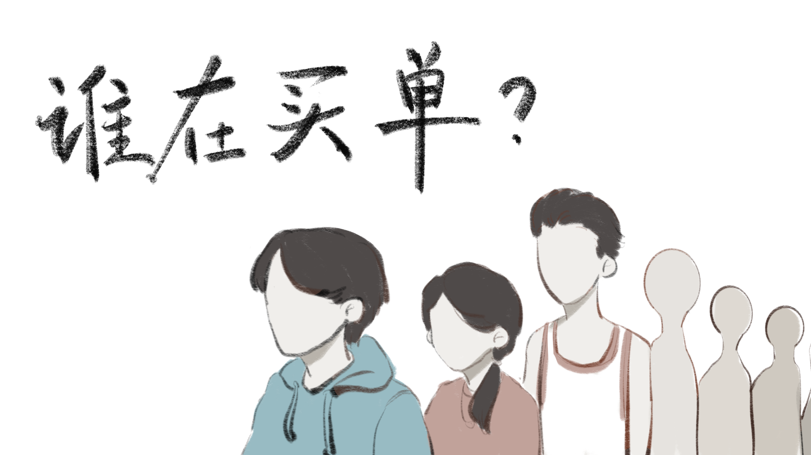
机构设陷学生，而学生也并非"完美受害人"。他们对暗藏的陷阱毫无觉察，兼之法律意识薄弱，盲目签约甚至随意触发违约行为。江苏天淦律师事务所近3年承接北海仲裁委和广州仲裁委仲裁相关案件超200宗，北海仲裁委仅2宗裁决支持主播，广州仲裁委无一宗支持主播。
在校大学生、未成年青年成为高频受害群体，其内在的脆弱性是沦为无良MCN机构收割目标的自身根源。
受整体就业市场竞争压力影响，不少大学生深陷就业焦虑，迫切想要寻找一条低门槛、投资回报快的出路。中国青年报社联合杭州市各主管部门开展的直播行业青年调研显示，51.9%青年认为直播行业收入潜力大、3.9%青年迫于就业竞争压力而选择投身直播行业。面对机构打出的"零门槛兼职"、"五千元保底薪资"等宣传话术，学生群体极易丧失辨别能力。加之初出茅庐的学生自身难以承担前期拍摄设备购置、账号流量投放等成本，机构提出的"免费孵化"、"全程垫付资源"等承诺便轻易打消其戒备心理。
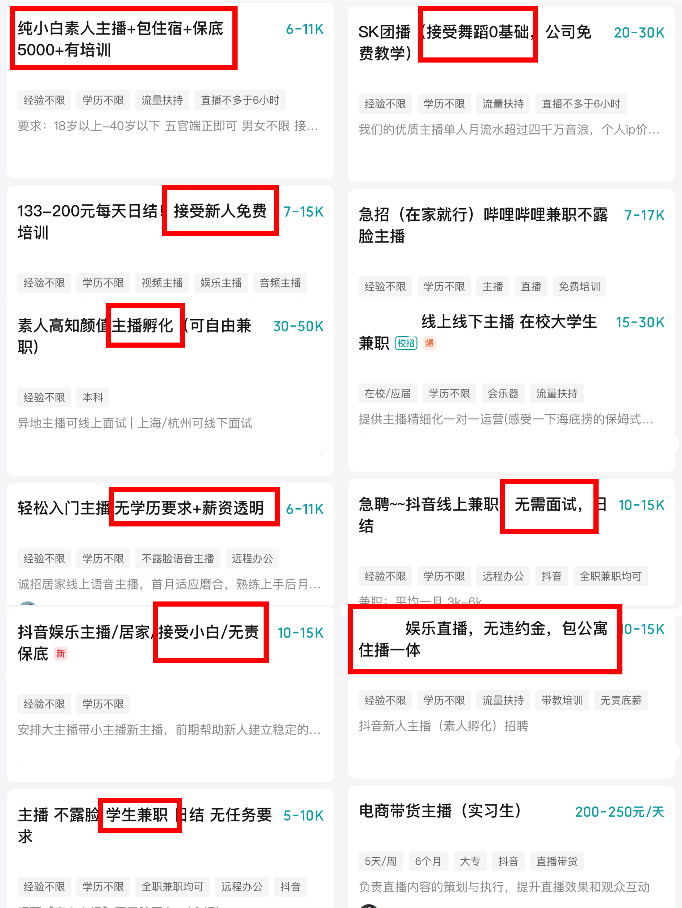
（图1-boss直聘软件中MCN机构发布的主播招聘信息）
大学生普遍缺少商事经纪相关法律知识储备，自身不具备辨别不平等合约条款的能力，签约阶段难以主动识别暗藏的约束陷阱，习惯轻信运营人员的口头承诺，不会仔细研读书面合同细则便草草签字。事后也不清楚可通过司法途径调整不合理违约金，法律维权能力存在明显短板。《法制日报》记者于2024年5月采访了曾为MCN机构提供法务咨询服务的刘昕，他表示所在公司每月要处理300至400起MCN机构与主播纠纷案，涉案人群里在校大学生十分集中，学生普遍缺少社会经验与法律意识，事前缺少风险研判，甚至随意违约，如停播、跳槽，送上门"被宰"，遭遇起诉后更是难以主动维护自身合法权益。
大学生社会阅历浅薄、心理承压能力有限，学生完成签约后，机构常借口账号数据不佳，持续进行精神打压，不断放大学生自我怀疑，迫使学生接受高强度直播安排，甚至诱导参与触碰内容底线的直播行为。《新湖南》2026年5月报道的法院判例显示，00后主播小叶签约MCN机构后，便被强制安排深夜直播、接受不合理的工作要求，长期的身心双重压迫让其心理彻底崩溃，无奈单方面停播解约，落入MCN机构的索赔陷阱。
MCN机构针对大学生的批量签约陷阱，早已不是个体纠纷，而是侵害青年权益、扰乱校园与网络生态的公共议题。
从个人层面看，MCN机构签约乱象会对在校大学生造成双重实质性伤害：长期直播挤占学习时间，极易造成学业停滞，同时直播行业存在的高强度流量考核机制给大学生带来巨大精神压力，就工作频率而言，43.2%的职业主播需要每日开播，其中单日直播时长达3小时以上占比77.2%，常态化高强度开播节奏不仅使学生主播难以平衡直播任务与学习安排，而且还会持续消耗大学生的身心健康。
网络暴力、恶意评论也会使其产生自我否定，甚至产生抑郁倾向。北美行业机构Creators4 Mental Health联合Lupiani Insights & Strategies对短视频、直播全职或兼职创作者进行的专项研究揭示：创作者的心理健康随着行业停留时间越长而恶化。工作五年及以上的人报告的职业倦怠率最高。在542名受访创作者中，65%表示他们痴迷于内容表现，58%表示当数据不佳时，他们的自我价值感会下降。10%的受访者表示，曾因工作产生过自杀念头，该比例是美国国家精神卫生研究所统计的全美成年人平均水平的两倍。
而暗藏霸王条款的失衡合约，一旦学生提出解约，不仅会让学生背负天价违约金、直接产生财产损失，机构还会以合同为依据持续对学生施压，形成身心与经济的双重侵害。
在社会层面，乱象持续蔓延可能会催生恶劣传导效应：温悦琳当初被公会万元签约金吸引签约，仅拿到部分款项后，机构便以直播时长不足停发剩余报酬，还要求她介绍其他女生签约才可继续结算薪资。这类诱导拉新的套路极易在校园内部形成连环收割的传播链条；未成年人、大学生群体权益长期受损，会动摇青年对灵活就业、数字经济的信任；同时野蛮生长的灰色MCN机构针对学生群体持续扩张违规业务，助推低俗直播、虚假流量、商事欺诈等行业顽疾，破坏网红经济良性发展根基。
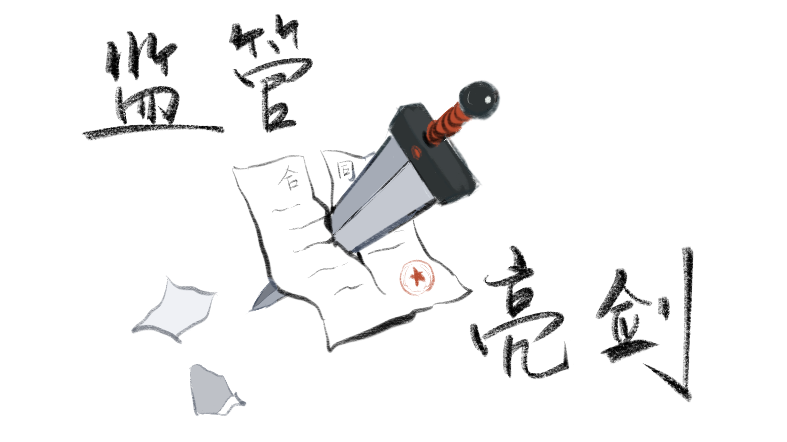
尽管MCN合同陷阱重重，但"签约即必输"的局面并非不可改变。近两年来，司法裁判与行政监管形成合力，MCN行业生态正在逐步得到优化。
合同的约定不等于法律的认可。在司法实践中，法院并非简单地依据合同文本作出裁判，而是通过独立的司法审查，对合同条款的法律效力、违约金的合理性等问题作出实质判断。
据北京市致诚律师事务所基于近千份裁判文书的统计，在652件MCN索赔违约金的案件中，法院支持率达90.2%，判赔金额10万元以下的占54.1%，10万至50万元占25.3%，最高达4900万元。
MCN索赔获得支持的几率虽高，但法院在84.9%的案件中对违约金进行了削减。在斗鱼诉在校大学生罗莉案中，斗鱼索赔600万元，仲裁庭认为该金额与主播实际所得相比不合理，最终仅支持2万元，调减比例约99%。在小王违约金的众多名目中，法院认定，预期收益损失因直播收益不确定性不予支持；运营人员成本、场地租赁费、装修成本均为公司经营成本，与主播违约之间缺乏直接因果关系。综合考量小王大学刚毕业、直播经验尚浅等因素，酌定小王承担违约金10000元、律师费5000元。MCN原主张的169452元最终仅获支持15000元，调减比例约91%。可见，主播单方停播或提前解约，经法院审理认定构成违约的，应当依法承担违约责任。但法院审理时会充分考虑违约金是否过分高于MCN公司因违约所遭受的实际损失。
然而，司法裁判终究是事后纠偏，难以覆盖行业生态中的系统性问题。从法律程序来看，大学生也未必天然占据道德高地，其违约行为在合同层面确实可能成立。行政监管应该及时介入，为这一新兴行业确立清晰的规则边界，压缩MCN机构利用信息不对称和法律程序实施不当牟利的空间，推动行业规范化运营。
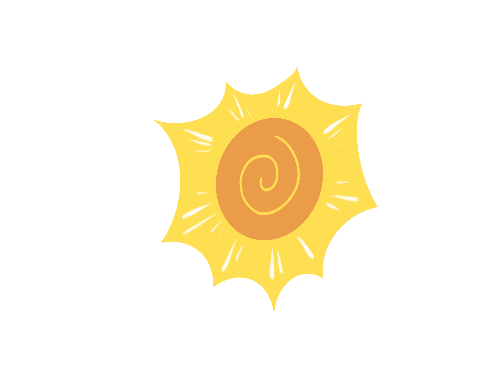
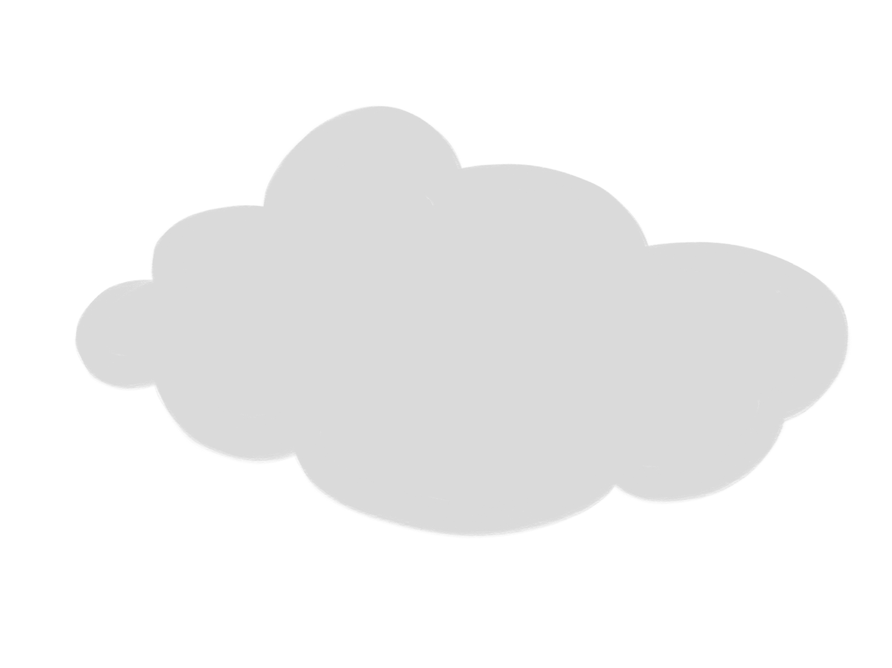
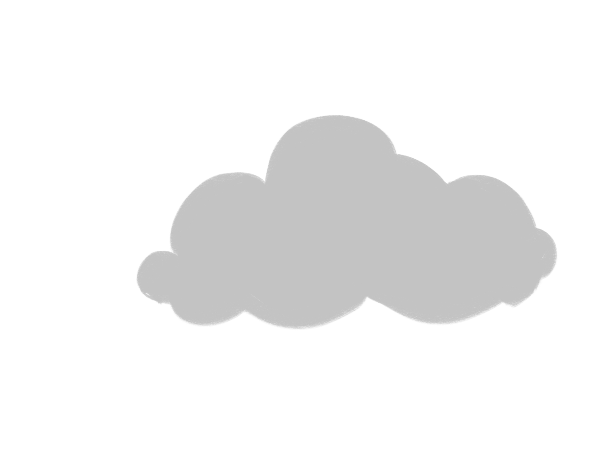
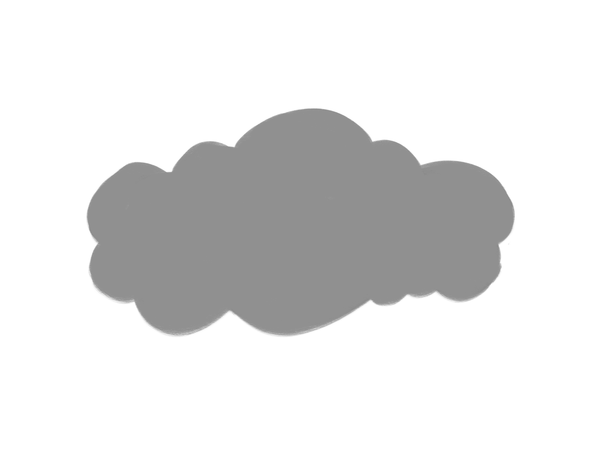
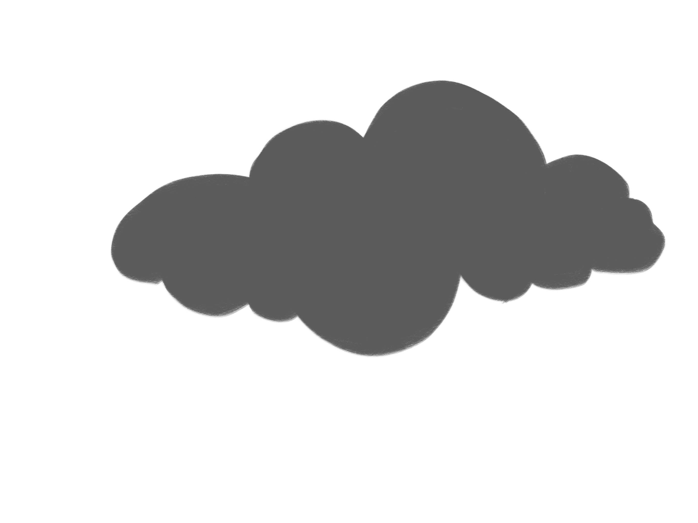
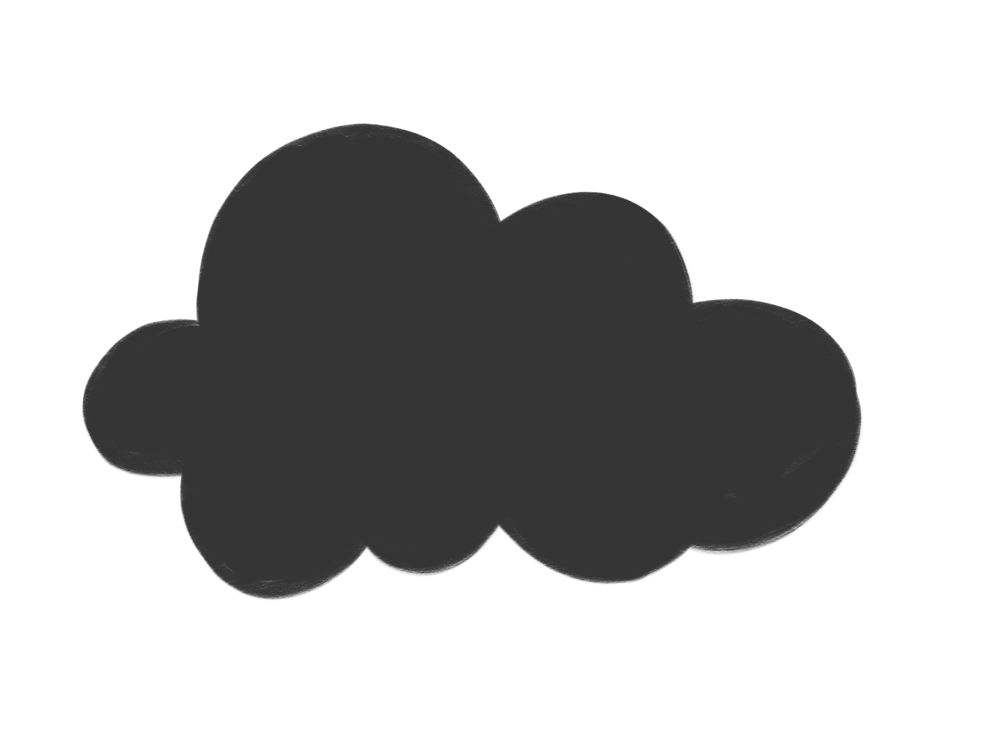
2025年1月，国家网信办发布MCN管理规定草案稿。
2025年10月，国家标准《网络表演经纪机构运营服务要求》获批，2026年2月实施，系国内首个网络表演经纪机构国标。
2025年12月，《直播电商监督管理办法》发布，2026年2月施行，明确MCN责任义务。2025年抖音协助3047名主播解除不规范合约，清退不良机构734家。
2025年"清朗"行动清退并禁止重新入驻MCN机构1300余家；全国网信系统关闭违规账号107802个。
2026年以来，抖音在"清朗·网络娱乐团播乱象整治"专项行动中处置团播违规3万人次，回收直播权限账号4025个，清退公会34家。
2026年5月，五部门联合公布《互联网信息内容多渠道分发服务管理规定》，2026年9月施行，要求MCN依法登记，平台显著展示账号所属机构。
中央网信办部署"清朗"系列专项行动，2026年7月开展为期两个月的团播乱象整治，重点针对不当玩法诱导打赏、侵害未成年人权益、MCN管理失范等问题。
司法层面对MCN"以诉牟利"模式的否定日益鲜明。从草案征求意见到国标实施，从五部门立法到专项行动，行政监管正逐步为这一野蛮生长的行业划定边界。
但是真正的改变，需要司法公正、监管有力、MCN经营有道与青年群体理智清醒四者合力完成。
合约不是枷锁，流量更不是人生捷径。行业监管为青年守住了法律底线；而真正能打破"必输困局"的，永远是年轻人放下一夜爆红的幻想，正视就业竞争、读懂合同、敬畏规则、理性看待数字红利。
但是，滤镜下掩盖的伤口，不单属于大学生网红，还属于新就业形态的参与者、属于互联网的冲浪者、属于每个在数字时代沉浮的个体。
我们期待每一位怀揣梦想的年轻人都能沉下心来，让热爱与努力真正成为前行的底气，而非沦为资本收割的筹码；我们期盼主播行业回归纯粹初心，让流量与价值双向奔赴共生，让网红经济行稳致远、向阳而生。